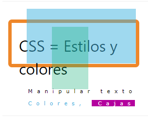

Estilos HTML - CSS
CSS significa hojas de estilo en cascada.
CSS ahorra mucho trabajo. Permite controlar el diseño de varias páginas web a la vez.

¿Qué es CSS?
Las hojas de estilo en cascada (CSS) se utilizan para dar formato al diseño de una página web.
¡Con CSS, puedes controlar el color, la fuente, el tamaño del texto, el espaciado entre elementos, cómo se posicionan y disponen los elementos, qué imágenes o colores de fondo se utilizarán, diferentes pantallas para diferentes dispositivos y tamaños de pantalla, y mucho más!
Consejo: La palabra " en cascada" significa que un estilo aplicado a un elemento principal también se aplicará a todos los elementos secundarios dentro del elemento principal. Por lo tanto, si establece el color del texto del cuerpo en "azul", todos los encabezados, párrafos y otros elementos de texto dentro del cuerpo también tendrán el mismo color (a menos que especifique algo más).
Usando CSS
Se pueden añadir CSS a documentos HTML de tres maneras:
En línea : mediante el uso del styleatributo dentro de elementos HTML
Interno : mediante el uso de un < style>elemento en la < head>sección
Externo : mediante el uso de un < link> elemento para vincular a un archivo CSS externo
La forma más común de agregar CSS es mantener los estilos en archivos CSS externos. Sin embargo, en este tutorial usaremos estilos internos y en línea, porque es más fácil demostrarlo y para que puedas probarlo tú mismo.
CSS en línea
Se utiliza un CSS en línea para aplicar un estilo único a un solo elemento HTML.
Un CSS en línea utiliza el styleatributo de un elemento HTML.
El siguiente ejemplo establece el color del texto del < h1>elemento en azul y el color del texto del < p>elemento en rojo:
Ejemplo
CSS interno
Se utiliza un CSS interno para definir un estilo para una sola página HTML.
Un CSS interno se define en la < head>sección de una página HTML, dentro de un < style>elemento.
El siguiente ejemplo establece el color del texto de TODOS los < h1>elementos (en esa página) en azul y el color del texto de TODOS los < p>elementos en rojo. Además, la página se mostrará con un color de fondo "azul pálido":
CSS externo
Se utiliza una hoja de estilo externa para definir el estilo de muchas páginas HTML.
Para utilizar una hoja de estilo externa, agregue un enlace a ella en la
sección de cada página HTML:La hoja de estilo externa se puede escribir en cualquier editor de texto. El archivo no debe contener código HTML y debe guardarse con extensión .css.
Así es como se ve el archivo "styles.css":
"estilos.css":
body {
background-color: powderblue;
}
h1 {
color: blue;
}
p {
color: red;
}
Consejo: Con una hoja de estilo externa, puedes cambiar la apariencia de un sitio web completo, ¡modificando un archivo!